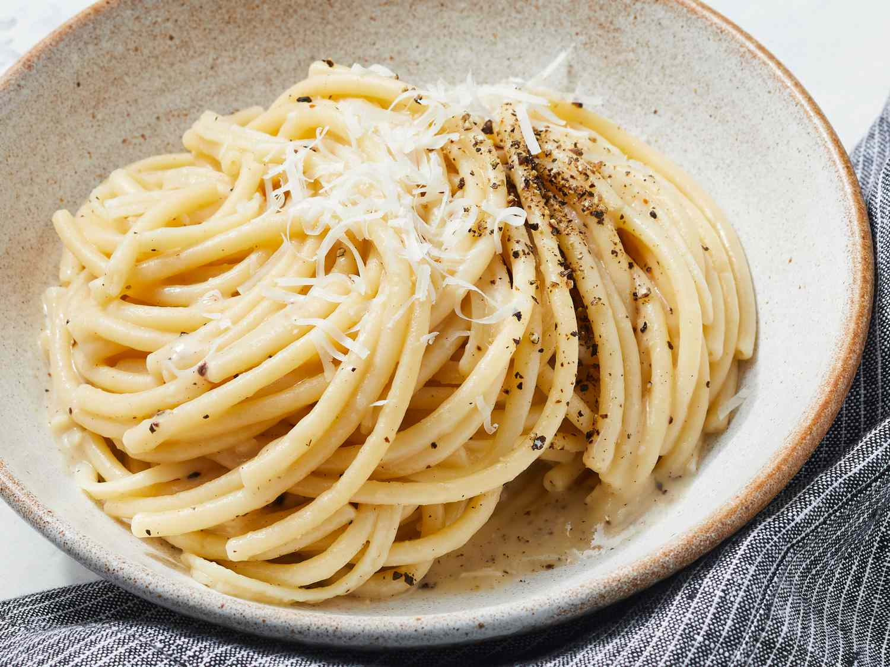

Cacio e pepe

This Bucatini cacio e pepe recipe has been made in our family for many years, and everyone loves it. It is a very basic and easy variation on mac and cheese.
Ingredients:
- 1 pound Bucatini
- 6 tablespoons olive oil
- 2 cloves garlic, minced
- 2 teaspoons ground black pepper
- 1 ¾ cups grated Pecorino Romano cheese
Directions:
- Bring a large pot of lightly salted water to a boil. Cook bucatini in boiling water, stirring occasionally, until tender yet firm to the bite, about 12 minutes. Reserve 1 cup cooking water, then drain Bucatini.
- Heat olive oil in a large skillet over medium heat. Cook and stir garlic and pepper in hot oil until fragrant, 1 to 2 minutes. Add cooked spaghetti and Pecorino Romano cheese. Ladle in 1/2 cup reserved cooking water; stir until cheese is melted, about 1 minute. Stir in more cooking water as needed, 1 tablespoon at a time, until sauce coats bucatini, about 1 minute more.